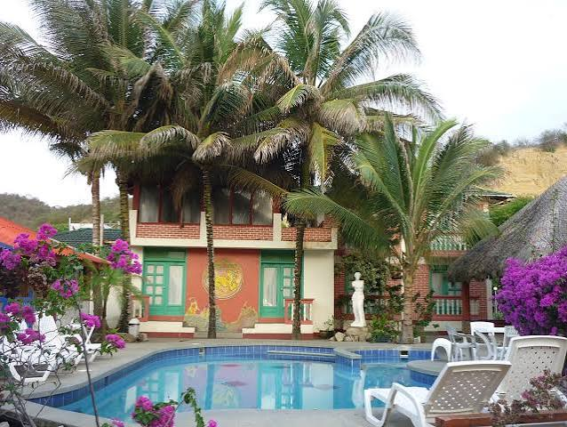

Avistamiento de ballenas
Excursión marítima para observar ballenas durante la temporada correspondiente en la costa de Manabí.
Solicitar informaciónTe ofrecemos diferentes opciones para disfrutar de Puerto López y conocer sus principales atractivos.
Excursión marítima para observar ballenas durante la temporada correspondiente en la costa de Manabí.
Solicitar información
Recorrido marítimo para conocer la Isla de la Plata y disfrutar de sus paisajes naturales.
Solicitar información
Recorrido para conocer diferentes atractivos naturales del Parque Nacional Machalilla.
Solicitar información
Experiencia para conocer algunos sabores tradicionales de la gastronomía de Manabí.
Solicitar información
Información y orientación para encontrar opciones de hospedaje durante tu visita a Puerto López.
Solicitar información
Visita uno de los espacios naturales más conocidos de la zona y disfruta de sus paisajes.
Solicitar información